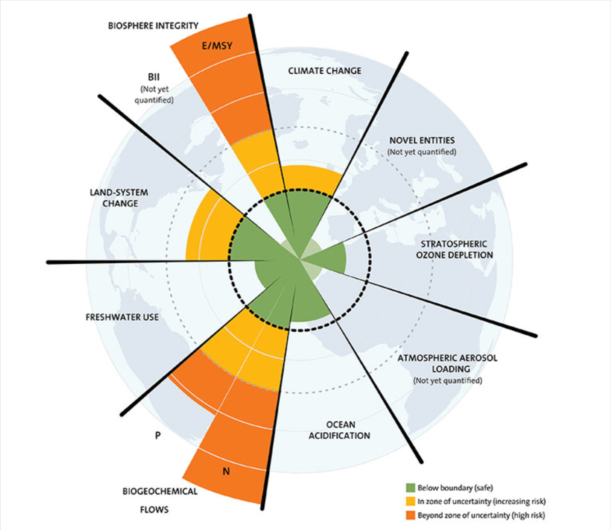

|
CASS and Climate change : How our community could contribute
Reading #1
The world is going into a disaster if no actions are taken soon to stop the global warming and the corresponding climate change. This workshop is aiming to be a working and meeting place to discuss current and future issues produced by the climate change and to define a roadmap of specific actions that need to be taken by CASS members, IEEE, and the research community at large to reduce the impact of the global warming.
Technology should play an important and essential role in this initiative as it provides ways to measure and analyze data that will show where we are regarding GHG emissions for example and can also help defining actions to be taken and, in some cases, automating the actions.
In the mid-2000s, Johan Rockström, founding Director of Sweden’s Resilience Center, was looking to define the boundaries for a “safe operating space for humanity” on the planet. He gathered a team of scientist who worked together and define 9 planetary boundaries, influenced by humanity, that threaten the stability of the entire Earth System. These boundaries were published in 2009 and are: climate change, biodiversity integrity, ocean acidification, depletion of the ozone layer, atmospheric aerosol pollution, biogeochemical flows of nitrogen and phosphorus, freshwater use, land-system change, and release of novel chemicals. The researchers estimated a limit of how much human activities can alter each of these processes before the the global system would pass a tipping point — a threshold beyond which we risk sending the Earth spiraling into a state that hasn’t been experienced for the entirety of human existence, bringing extreme change that could crash civilization and endanger humanity1.
In 2015, the Stockholm Resilience Center estimates how seven planetary boundaries have changed from 1950 to present2.
A new economic theory, The Doughnut Economics3, is based on these planet boundaries and the UN Sustainable Development Goals4.

Different human activities have affected not only the planetary boundaries, but also the life on the planet. We are seeing drastic consequences on human health, on migration, of food security, on poverty to just mention some of them.
In 2021, Bill Gates published a book5 regarding climate change and proposing some ideas to avoid this disaster. The book presents several topics that are influencing the change of climate: Energy, Manufacturing, Food Production, Transportation, Heating and Air Conditioning.
Lancet published a report in 2021 which says, “neither COVID-19 nor climate change respect national borders. Without widespread, accessible vaccination across all countries and societies, SARS-CoV-2 and its new variants will continue to put the health of everybody at risk6. Likewise, tackling climate change requires all countries to deliver an urgent and coordinated response, with COVID-19 recovery funds allocated to support and ensure a just transition to a low-carbon future and climate change adaptation across the globe.” Moreover, as with COVID-19, the health impacts of climate change are inequitable, with disproportionate effects on the most susceptible populations in every society. While the world’s attention has been diverted towards the ongoing acute health crisis, the health effects of human-induced climate change continue to increase. On the current trajectory, climate change will become the defining narrative of human health. Moreover, the people least responsible for climate change are most exposed to its impacts.
References
1. Claire Asher, “The nine boundaries humanity must respect to keep the planet habitable”, March 30th, 2021
2. https://www.stockholmresilience.org/research/planetary-boundaries/the-nine-planetary-boundaries.html
3. Kather Raworth, “Doughnut Economics: 7 Ways to Think Like a 21st Century Economist”, Chelsea Green Publishing Company, 2018
5. Bill Gates, “How to Avoid a Climate Disaster”, Alfred A. Knopf, 2021
6. The 2021 report of the Lancet Countdown on health and climate change: code red for a healthy future, https://www.thelancet.com/journals/lancet/article/PIIS0140-6736(21)01787-6/fulltext
Reading #2
The impacts of climate change are everywhere, from health to migration, food security to, more broadly, poverty. Climate change does not affect everyone equally – persons and communities who are already vulnerable suffer more due to the impact of climate change. Perhaps worse still, these impacts of climate change deepen the inequalities, since the vulnerable are least equipped to rebuild and reconstruct after the immediate catastrophes.
The realities and impacts of climate change are receiving increasing attention the world over. Nowhere is this more evident than the 27th Conference of the Parties of the UNFCCC (COP27) which concluded just last week, and purported to “build on previous successes and pave the way for future ambition to effectively tackle the global challenge of climate change”. The four goals of the Conference were linked to adaptation, mitigation, finance and collaboration. The issues of climate action are closely related to the Sustainable Development Goals (SDGs).
Collaboration across sectors, actors and ideas is an essential part of climate action. Governments and other actors are organising to respond to climate change and coordinate climate action. In Singapore, for example, the Inter-Ministerial Committee on Climate Change (IMCCC), established in 2007, enhances whole-of-Government coordination on climate change policies to ensure that the country is prepared for the impacts of climate change. The Ministry for Sustainability and the Environment, which this year celebrates is 50th anniversary, held a Climate Action Week in September. Singapore’s Green Plan aims to build a more sustainable nation by 2030, with goals including reducing waste sent to landfills by 30%, greening 80% of Singapore buildings, slashing net carbon emissions from schools by 60%, and developing Singapore as a leading regional centre for green finance and services to facilitate Asia’s transition to a low-carbon and sustainable future.
In the same context of coordination and collaboration, the present IEEE Workshop on Electronics for Mitigating Climate Change is timely and relevant, and hopes to advance the contribution of digital technologies (including circuits and systems, electronics and telecommunications, sensors and actuators, etc.) to climate action. Just as importantly, the workshop stems from a necessity – for us to consider how to not only positively contribute to climate action, but also reduce our harmful contribution to climate change.
Much recent research has turned its focus on the role that digital technologies have played in aggravating climate change. An equivocal 2022 article in Elsevier asked whether digital technologies and information management were part of the problem or the solution; and launched a call to action from us, the very members who contribute to the advancement of digital technologies and information management. Other reports on digital technologies worsening climate change are more categorical in their condemnation and we must take full cognisance of them. Compendia are beginning to emerge with resources on the impacts of digital technologies in the environment. The Royal Society made a more hopeful and forward-looking assessment, stating that digital technologies can in fact help tackle climate change. In 2019, the International Telecommunication Union, ITU, published a report on “maximising the potential opportunities and minimising the downsides of ICTs” when it comes to climate change. In 2021, the Asian Development Bank ADB did a comprehensive analysis entitled “Digital technologies for climate action, disaster resilience and environmental sustainability”. More subjective lobbying has been done through GeSI’s “Digital with purpose” and DigitalEurope’s “Digital action = climate action”.
The IEEE is increasingly important as a voice on the links - both virtuous and vicious - between climate change and digital technologies, with the recent formation of an ad-hoc committee on climate by the Board of Directors and, in 2021, the participation of IEEE Fellow Bruno Meyer in a panel during COP26 to discuss ways in which IEEE can help address the global climate challenges. There have already been fora dedicated to specific technologies and climate change – in 2021, the IEEE Future Tech Forum and in 2022, the Quantum Conference. In 2020, IEEE made an international call for standards to combat climate change. Finally, there is a dedicated portal for IEEE members on all things related to sustainability, “Sustainable ICT and sustainability through ICT”. The IEEE Spectrum has been increasingly publishing articles describing technologies to address specific issues of climate change.
Reading #3: 2050 Today
The planet has entered a state of emergency with unprecedented risk of damage to humanity and the environment. Global warming and the collapse of biodiversity are having fatal consequences on an exponential scale. Urgent action is needed at all levels – everywhere and now – to confront the threat. To achieve the goal of zero net emissions by 2050, GHG emissions must already be reduced by 50% by 2030. As with a balanced budget in the long term, it is essential to take immediate, concrete and continuous reduction measures, otherwise the target can never be achieved by the set deadline.
2050Today is the Geneva climate action forum where institutions of International Geneva, such as permanent missions, international organizations, private and civil society entities, come together to tackle climate change by measurably reducing GHG emissions. We mobilize climate action by helping our members measure their emissions, implement common and customized solutions through working groups and benefit from applied research.
For additional details visit https://2050today.org/